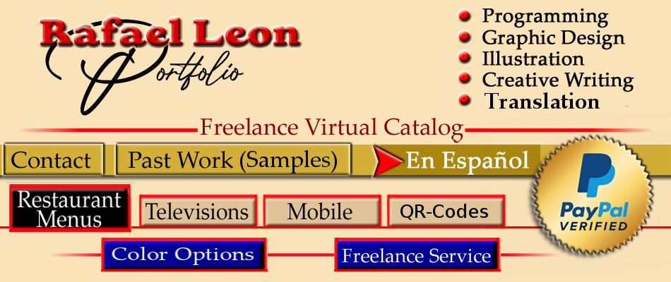

<!-- NEW PORTFOLIO - RAFAEL LEON - 2023 -->


<DOCTYPE html>
<lang="en">


<head>

<meta charset="utf-8">

<title> Portfolio-Rafael Leon </title>

<link rel="stylesheet" href="index.css">


<meta name="viewport" content="width=device-width, initial-scale1">


</head>


<body>


<div id="container">

     <div id="head"></img>
	 
	 <map name="leon">

     <area shape="rect" coords="10, 200, 140, 250" href="contact.html"><!-- CONTACT -->
	 <area shape="rect" coords="160, 200, 500, 250" href="past-jobs.html"><!-- PAST WORK -->
	 <area shape="rect" coords="510,200, 770, 250" href="index.html"><!-- ESPAÑOL -->
	 <area shape="rect" coords="20, 260, 180, 320" href="restaurant.html"><!-- RESTAURANT- MENUS-->
	 <area shape="rect" coords="200, 280, 360, 320" href="television.html"><!-- TELEVISIONS-->
	 <area shape="rect" coords="380, 270, 540, 320" href="mobile.html"><!-- MOBILE-->
	 <area shape="rect" coords="550, 280, 710, 320" href="qr-english.html"><!-- QR-CODES-->
	 <area shape="rect" coords="150, 330, 420, 380" href="colors.html"><!-- COLOR CATALOG -->
	 <area shape="rect" coords="460, 330, 770, 380" href="freelance-english.html"><!-- FREELANCE-->
	 
	 </map>
	 
	 
	 </div>
	 
	 
	 
	 <div id="center"> <p lang="en">
	                   <span style="font-size:26" ><b>Websites Are An Essential Tool, Indispensable For 
					   Businesses</b></span><br><br>
					   
					   Keeping an online presence that is accessible, inviting, impacting & user-friendly is indispensable. First impressions of a 
					   site engrave the image in the mind of potential or present patrons for a long time. Cyber-space is an unrivaled location for 
					   sourcing & making new contacts. Unbeatable for stimulating & increasing current or future business, it's unparalleled for 
					   accessibility, functionality, diversity, interactivity, cost per view & low maintenance. </p> <br>
					   

                  
	 
	 
	 
	 </div>
	 
	 <div id="animation"></img>
	 
	 
	 
	 </div>
	 

     <div id="footer"><p lang="en"><span style="font-size:23" ><b>Websites Should Be Proportionate, Equally Legible & Clear On All Device 
	                   Sizes Or Displays; Most Are Not </b> </span><br><br>
					   
                        The most important feature of any website is cross browser & display compliance. In layman's terms this means that they 
						should access & display the same on any monitor or browser. A browser is an application used to access and view websites, 
						such as Chrome, Safari, Firefox, Edge, Opera & others,  there are several major ones. After all, what good is a 
						sophisticated, beautiful website which is perfectly legible, proportionate & clear on a PC or pad but doesn't display 
						correctly on a cellular or large screen television. A properly designed website should display as well on a 4” cellular 
						screen as on a 75” smart television. <br><br>


                        There are webs specifically designed for one size of device. For example, a menu meant only to be seen in a restaurant on a 
						huge smart television on the wall. However, that is the exception to the rule, they would have to have another web online, 
						to be seen on all devices for other clients to view the menu. The most practical design is one that works equally well on 
						all media displays & is cross-browser compliant.<br><br><br>
						
					   <span style="font-size:23" ><b>There are many free website builders for inexperienced people, the majority are primitive, 
					   unstable & have constant glitches</b></span><br><br>
					   Innumerable free website builders, programs, platforms or software, online, offer laymen business owners the tools 
					   with which to make their own websites. Though there are exceptions, the majority of these are ineffective, unstable & 
					   extremely complicated to learn. After trying unsuccessfully many times and wasting a lot of time, people realize it's best 
					   left to someone with the experience and education in this field. The most adequate way of developing a web is hand-coding it with HTML 
					   (HyperText Markup Language). HTML is the most basic building block of the internet. Other codes dictate appearance, 
					   functionality, behavior etc. Though simple, HTML is the natural choice for best functionality.</p>  <br><br>
	 
	 
	 
	 </div>


</div>

</body>


</html>


</div>


</body>
</html>


